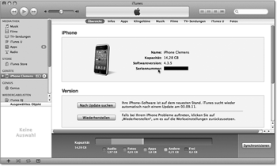
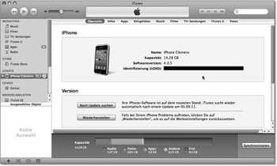
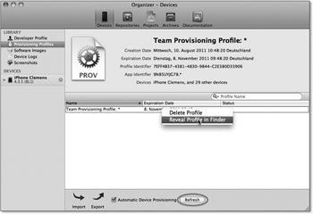
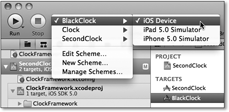
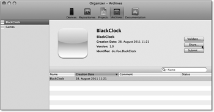
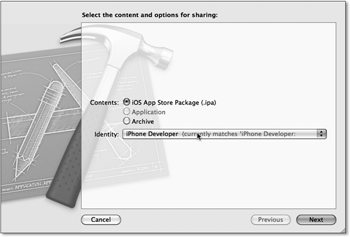
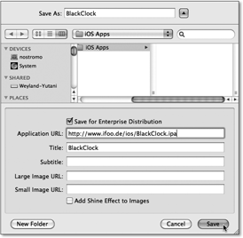

Zum Online-Shop
Zum Online-Shop
7.3 Ad-Hoc-Distributionen
In der Entwicklungsphase eines iOS-Projektes möchten Sie häufig den aktuellen Stand der App anderen Personen, z. B. Testern oder Kunden, zur Verfügung stellen. Natürlich können sich diese Personen immer den aktuellen Stand bei Ihnen am Rechner abholen. Aber dieser Weg erweist sich in der Praxis häufig als unpraktisch oder unbrauchbar. Die Tester kommen immer zum ungünstigsten Zeitpunkt vorbei. Die Kunden leben in weiter Entfernung und haben für Besuche sowieso keine Zeit – abgesehen davon müssten Sie auch erst einmal Ihren Schreibtisch aufräumen.
Glücklicherweise können Sie aber Ihre Apps über Ad-Hoc-Distributionen auch auf elektronischem Weg an andere Personen verteilen. Allerdings ist diese Möglichkeit nur für Testzwecke gedacht. Damit Sie eine App per Ad-Hoc-Distribution auf einem Gerät installieren können, müssen Sie dieses Gerät zuvor im Provisioning Portal registrieren. Falls Sie sich über das iOS Developer Program registriert haben, können Sie Ihre Apps auf maximal 100 Geräte verteilen.
7.3.1 Geräteregistrierung
Kapitel 5 beschreibt das Vorgehen, wie Sie Geräte über Xcode im Portal registrieren können. Dafür müssen Sie allerdings mindestens einmal das Gerät an Ihren Rechner anschließen. Das kann sich aber bei entfernt lebenden Testern als sehr schwer durchführbar erweisen. Das Provisioning Portal erlaubt Ihnen aber auch die Registrierung über die Geräteidentifizierung (UDID). Das ist eine 40-stellige Zeichenkette, die das Gerät eindeutig identifiziert. Diese Nummer kann der Tester über iTunes ermitteln und Ihnen zusenden.
| Bestimmung der UDID über iTunes |
|
Um die UDID über iTunes zu bestimmen, müssen Sie folgende Schritte durchführen:
|

Mit der UDID können Sie nun im Provisioning Portal [37](https://developer.apple.com/ios/manage/overview/index.action) das Gerät registrieren. Öffnen Sie dazu den Punkt Devices in der linken Spalte, und klicken Sie danach auf den Button Add Devices oben rechts. Im Feld Device Name können Sie für das Gerät einen beliebigen Namen eingeben. Apple empfiehlt hier die Verwendung der E-Mail-Adresse des Eigentümers. Die 40-stellige UDID des Geräts kopieren Sie in das Feld Device ID. Durch Anklicken des Submit-Buttons schließen Sie die Registrierung ab.
Nach der erfolgreichen Registrierung muss der Tester ein Profil auf seinem iPhone installieren, das Sie erzeugen und ihm zuschicken müssen. Öffnen Sie dazu den Reiter Devices im Xcode-Organizer, und wählen Sie den Punkt Provisioning Profiles in der Rubrik Library aus. Damit das Team Provisioning Profile auch das neue Gerät enthält, müssen Sie zunächst Refresh drücken.
Abbildung 7.34 Anzeige der Seriennummer in iTunes
Abbildung 7.35 Anzeige der Identifizierung
Über einen Rechtsklick auf das Profil und den Menüpunkt Reveal Profile in Finder können Sie sich die Profildatei im Finder anzeigen lassen (siehe Abbildung 7.36). Diese Datei müssen Sie an Ihre Tester verschicken.
Abbildung 7.36 Profil im Finder anzeigen
Für die Installation auf einem iOS-Gerät braucht der Tester das iPhone Konfigurationsprogramm, das er kostenlos bei Apple herunterladen kann. [38](http://www.apple.com/de/support/iphone/enterprise/) Dieses Programm gibt es für OS X und Windows.
| Installation eines Profils über das iPhone Konfigurationsprogramm |
|
Für die Installation des Profils über das iPhone Konfigurationsprogramm schließen Sie Ihr iOS-Gerät an den Computer an. Danach ziehen Sie die Profildatei auf das iPhone Konfigurationsprogramm und wählen das Gerät in der Rubrik Geräte aus. Unter der Rubrik Bereitstellungsprofile finden Sie eine Liste der vorhandenen Profile. Über den Butten Installieren können Sie das passende Profil auf das Gerät übertragen (siehe Abbildung 7.37). |
|
Sie können die Installation überprüfen, indem Sie auf dem iPhone die Einstellungen öffnen. Es zeigt die installierten Profile unter dem Punkt Allgemein · Profil an. |
Nach der Installation des Profils ist das Gerät für die Ausführung der Entwicklungsversionen Ihrer Apps vorbereitet. Sie können die App nun an die Testnutzer verteilen.
Abbildung 7.37 Installieren eines Profils
7.3.2 Installation über das iPhone Konfigurationsprogramm
Das iPhone Konfigurationsprogramm kann aber nicht nur Profile, sondern auch Apps auf iOS-Geräten installieren. Dazu müssen Sie die App aber nach der Übersetzung für die Installation vorbereiten. Dabei signiert Xcode die App, sodass nur die Geräte mit dem passenden Profil sie installieren und ausführen können.
Wenn Sie eine App weitergeben möchten, müssen Sie zunächst ein Archiv erstellen, das die übersetzte App enthält. Xcode erlaubt aber nur die Erstellung von Archiven für iOS. Eine Archivierung der Programme für den Simulator ist nicht möglich. Für die Archivierung wählen Sie über den Button Scheme in der Xcode-Toolbar das passende Schema mit der Zielarchitektur iOS (siehe Abbildung 7.38).
Abbildung 7.38 Zielarchitektur für die Archivierung auswählen
Danach rufen Sie den Menüpunkt Product · Archive auf. Xcode erzeugt das Archiv und zeigt es im Organizer an (siehe Abbildung 7.39).
Abbildung 7.39 Anzeige eines Archivs im Organizer
Über den Button Share... können Sie eine Distribution erstellen. Wenn Sie ihn drücken, öffnet Xcode zunächst einen Dialog mit den Optionen. Wählen Sie hier die Option iOS App Store Package (.ipa) aus (siehe Abbildung 7.40). In dem Dropdown-Menü für die Identität (Identity) wählen Sie das Entwicklerprofil (iPhone Developer) aus, das zu dem an die Tester verteilten Profil passt. Wenn Sie beispielsweise das Team Provisioning Profile verteilt haben, wählen Sie einen Eintrag aus, der dieses Profil enthält. In der Regel können Sie in der Rubrik Automatic Profile Selector (Recommended) den Punkt iPhone Developer verwenden (Abbildung 7.40).
Abbildung 7.40 Optionen für die Erstellung einer Distribution
Nach dem Drücken von Next erzeugt Xcode die IPA-Datei, was einige Zeit dauern kann. Danach speichern Sie die Datei auf der Festplatte ab. Wenn Sie die App per Mail verschicken wollen, brauchen Sie die Checkbox Save for Enterprise Distribution (siehe Abbildung 7.41) nicht auszuwählen. Xcode legt eine Datei mit der Endung .ipa an. Sie können diese Datei an die Tester verschicken.
| Installation einer IPA-Datei über das iPhone Konfigurationsprogramm |
|
Schließen Sie für die Installation einer App Ihr iOS-Gerät an den Computer an, und
ziehen Sie die IPA-Datei auf das Programmsymbol des iPhone Konfigurationsprogramms. Nach dem Start des Programms wählen Sie das angeschlossene Gerät aus der Liste aus
und öffnen den Reiter Programme. Das Konfigurationsprogramm zeigt Ihnen eine Liste der verfügbaren Programme des
Gerätes und des Konfigurationsprogramms an. Um ein neues Programm zu installieren,
drücken Sie einfach den gleichlautenden Button neben dem Namen der App.
|
7.3.3 Ad-Hoc-Distributionen über einen Webserver
Die Verteilung einer iOS-App über das iPhone Konfigurationsprogramm ist bei einem größeren Kreis von Testnutzern schon recht praktisch. Sie können die Installation für die Nutzer aber noch vereinfachen, wenn Sie einen Webserver haben, auf dem Sie Dateien für den Download bereitstellen können. Sie müssen dort zwei Dateien ablegen können: die IPA-Datei mit der App und eine Propertyliste mit Metainformationen.
Die Propertyliste können Sie sich von Xcode erstellen lassen, indem Sie beim Abspeichern der IPA-Datei die Option Save for Enterprise Distribution auswählen, wodurch Xcode weitere Optionen im Dialog anzeigt (siehe Abbildung 7.41).
Abbildung 7.41 Speichern einer IPA-Datei mit Metadaten
Für die Metadaten müssen Sie zwei zusätzliche Angaben machen. Zum einen müssen Sie die URL in dem Feld Application URL angeben, unter der Sie die IPA-Datei der App ablegen. Außerdem müssen Sie einen Namen für die App im Feld Title angeben. Wenn Sie den Button Save anklicken, speichert Xcode zwei Dateien ab – neben der IPA-Datei noch eine Propertyliste mit dem gleichen Namen und der Endung .plist. Sie müssen beide Dateien auf Ihrem Webserver ablegen. In der Regel können Sie sie im gleichen Verzeichnis des Webservers ablegen, sodass sich die URLs zu beiden Dateien nur in der Dateiendung unterscheiden. Für die URL in Abbildung 7.41 könnte die URL für die Propertyliste also beispielsweise http://www.ifoo.de/ios/BlackClock.plist lauten.
| Tipp |
|
Sie brauchen die Propertyliste pro Applikation nur einmal zu erstellen. Wenn Sie ein Update verteilen möchten, können Sie die Propertyliste von der ersten Distribution verwenden. Es reicht also aus, wenn Sie die Distribution für das Update wie das für die Installation per Konfigurationsprogramm erzeugen. |
Durch die Installation der Datei auf einem Webserver haben Sie schon alle Schritte für die Installation Ihrer App über einen Webserver vollzogen. Sie müssen jetzt nur noch eine URL an die Testnutzer verschicken, damit diese die App herunterladen und auf ihren Geräten installieren können. Die URL hat dabei immer die Form
itms-services://?action=download-manifest&url=<Propertylist-URL>
wobei <Propertylist-URL> für die URL auf die Propertyliste steht. Für die BlackClock-App lautet diese URL also beispielsweise:
itms-services://?action=download-manifest&url=http://www.ifoo.de/ios/BlackClock.plist
Sie können diese URL entweder per Mail an die Testnutzer versenden oder in einen Link einer Webseite legen. Sobald ein Testnutzer diese URL auf seinem Gerät öffnet, lädt es die App herunter und installiert sie.
Ihr Kommentar
Wie hat Ihnen das <openbook> gefallen? Wir freuen uns immer über Ihre freundlichen und kritischen Rückmeldungen.


{kind=link}
{kind=link}
{kind=link}
{kind=link}
{kind=link}
{kind=link}
{kind=link}
{kind=link}